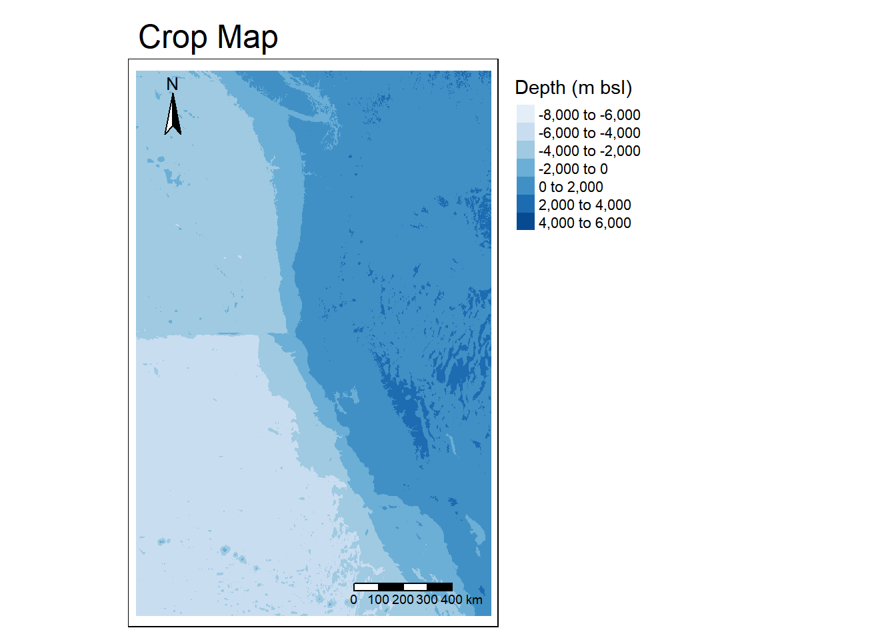
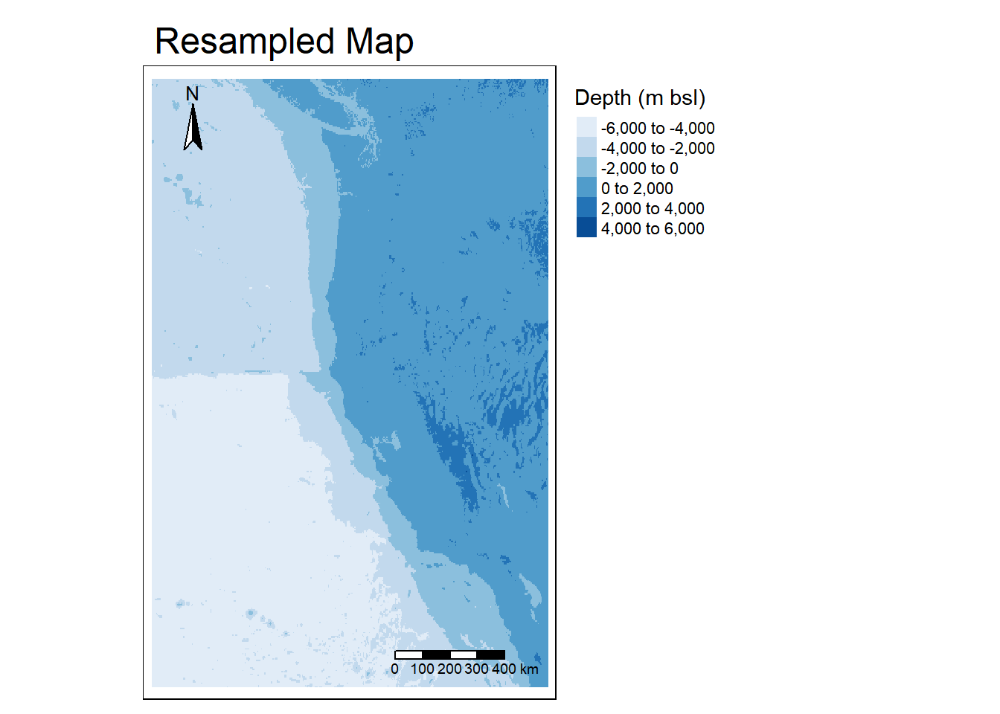
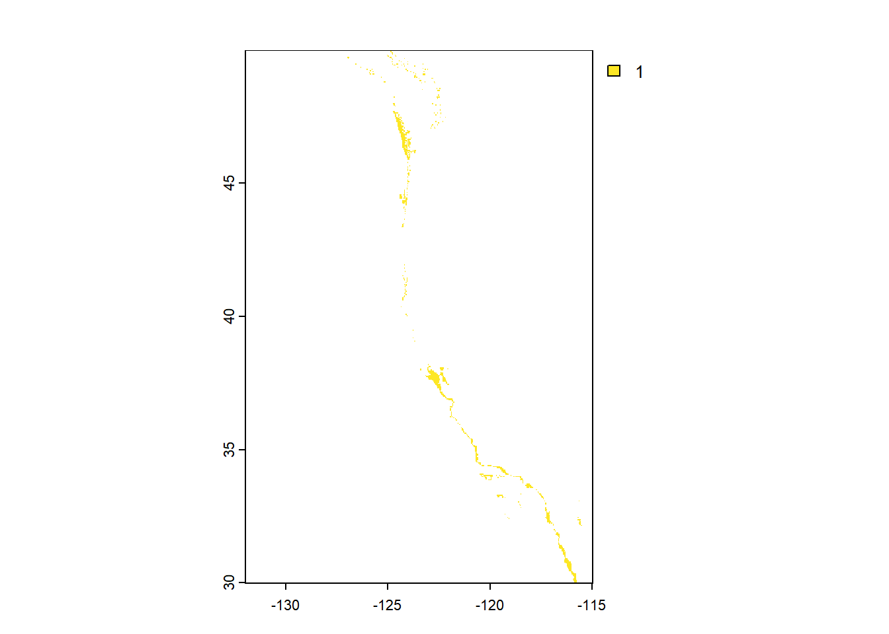

Show the code
library(terra)
library(tidyverse)
library(tmap)
library(kableExtra)
library(here)
library(sf)
library(stars)
library(viridis)
library(kableExtra)
library(here)More information is available at this repository.
As the global population continues to grow exponentially, the sustainability of current protein sources can be called into question. Marine aquaculture provides a potential solution through this problem, as mapped by Gentry et al., where marine aquaculture potential was analyzed based on restraining factors such as bottom depth. They found that they could fulfill the global seafood demand by using less than 0.015% of the ocean area.
library(terra)
library(tidyverse)
library(tmap)
library(kableExtra)
library(here)
library(sf)
library(stars)
library(viridis)
library(kableExtra)
library(here)# Bathymetry
bath <- rast(here('blogpost', 'aquaculture', 'data','depth.tif'))
# Exclusive Economic Zones
eez <- st_read(here('blogpost', 'aquaculture', 'data', 'wc_regions_clean.shp'))# Sea surface temperature data
sst_2008 <- rast(here('blogpost', 'aquaculture','data','average_annual_sst_2008.tif'))
sst_2009 <- rast(here('blogpost', 'aquaculture','data','average_annual_sst_2009.tif'))
sst_2010 <- rast(here('blogpost', 'aquaculture','data','average_annual_sst_2010.tif'))
sst_2011 <- rast(here('blogpost', 'aquaculture','data','average_annual_sst_2011.tif'))
sst_2012 <- rast(here('blogpost', 'aquaculture','data','average_annual_sst_2012.tif'))
# Stack rasters using c()
sst_stack <- c(sst_2008, sst_2009, sst_2010, sst_2010, sst_2011, sst_2012)# Check CRS of sst_stack
st_crs(sst_stack) # no CRSCoordinate Reference System:
User input: WGS 84
wkt:
GEOGCRS["WGS 84",
DATUM["unknown",
ELLIPSOID["WGS84",6378137,298.257223563,
LENGTHUNIT["metre",1,
ID["EPSG",9001]]]],
PRIMEM["Greenwich",0,
ANGLEUNIT["degree",0.0174532925199433,
ID["EPSG",9122]]],
CS[ellipsoidal,2],
AXIS["latitude",north,
ORDER[1],
ANGLEUNIT["degree",0.0174532925199433,
ID["EPSG",9122]]],
AXIS["longitude",east,
ORDER[2],
ANGLEUNIT["degree",0.0174532925199433,
ID["EPSG",9122]]]]# Match crs of sst to other CRS
sst_stack <- terra::project(sst_stack, "EPSG:4326")
# Check CRS between data sets
st_crs(bath) == st_crs(sst_stack)[1] TRUEst_crs(eez) == st_crs(sst_stack)[1] TRUE# Add warning to see if CRS match
if(st_crs(bath) == st_crs(eez) & st_crs(eez) == st_crs(sst_stack) & st_crs(bath) == st_crs(sst_stack)) {
print("coordinate reference systems of datasets match")
} else {
warning("cooridnate reference systems to not match")
}[1] "coordinate reference systems of datasets match"# Find mean SST from 2008-2012
sst_mean_k <- mean(sst_stack, na.rm = TRUE) # apply mean directly
# Convert from K to C by subtracting -273.15
sst_mean <- sst_mean_k - 273.15# Crop depth raster to match the extent of the SST raster
bath_crop <- crop(bath, ext(sst_mean)) # match extent
# Match resolutions of SST and depth
bath_rs <- resample(bath_crop, sst_mean, method = "near") # set method - week 4 lab
# Stack rasters for temperature and depth
stack_raster <- c(sst_mean, bath_rs)# Check that the depth and SST match in:
# Resolution
resolution(sst_mean) == resolution(bath_rs)[1] TRUE# Extent
ext(sst_mean) == ext(bath_rs)[1] TRUE# CRS
st_crs(sst_mean) == st_crs(bath_rs)[1] TRUE# Visually check changes of cropped and resampled depth
# Cropped map
tm_shape(bath_crop) +
tm_raster(title = "Depth (m bsl)",
palette = "Blues", midpoint = NA) +
tm_layout(main.title = "Crop Map",
legend.outside = TRUE,
legend.width = 5,
title.size = 2) +
tm_compass(size = 2,
position = c('left', 'top')) +
tm_scale_bar(size = 2,
position = c('right', 'bottom'))
# Resampled map
tm_shape(bath_rs) +
tm_raster(title = "Depth (m bsl)",
palette = "Blues", midpoint = NA) +
tm_layout(main.title = "Resampled Map",
legend.outside = TRUE,
legend.width = 5,
title.size = 2) +
tm_compass(size = 2,
position = c('left', 'top')) +
tm_scale_bar(size = 2,
position = c('right', 'bottom'))
Recall Oyster optimal growing conditions:
# Reclassify sst and depth into oyster suitable locations
# Create reclassification matrix for sst
sst_reclass_mtx <- matrix(c(-Inf, 11, NA, # Temp below 11 degC is set to NA for unsuitable
11, 30, 1, # Temp from 11-30 degC is 1 indicating suitable
30, Inf, NA), # Temp above 30 degC is unsuitable, set to NA
ncol = 3, byrow = TRUE)
# Create reclassification matrix for depth
bath_reclass_mtx <- matrix(c(-Inf, -70, NA, # Depth below 70 mbsl set to NA indicating unsuitable
-70, 0, 1, # Depth from 0-70 mbsl is 1 for suitable
0, Inf, NA), # Depth greater than 0 m bsl set to NA for unsuitable
ncol = 3, byrow = TRUE)# Use reclassification matrix to reclassify sst and depth
# Depth reclassification
bath_rcl <- classify(stack_raster$depth, rcl = bath_reclass_mtx) # select only depth
# Initial plot of depth
plot(bath_rcl)
# SST/Temp reclassification
sst_rcl <- classify(stack_raster$mean, rcl = sst_reclass_mtx) # select only mean
# Initial plot of temperature
plot(sst_rcl)
# find locations that satisfy both SST and depth conditions
# Use lapp to multiply and determine conditions
# Anything multiplied by unsuitable will be 0, suitable will be 1
location <- lapp(c(bath_rcl, sst_rcl),
fun = function(x,y){return(x*y)})
# Initial plot of suitable locations
plot(location)
# Select suitable cells within West Coast EEZs
# Mask location raster to EEZ locations
masked_location <- mask(location, eez)
# Initial plot
plot(masked_location)
# Find the area of grid cells using cellSize
suitable_area <- cellSize(x = masked_location, # Selecting suitable locations from above
mask = TRUE, # When true, previous NA will carry over
unit = 'km') # Selecting km from data
# Initial plot
plot(suitable_area)
# Find the total suitable area within each EEZ
# Rasterize EEZ data
eez_raster <- rasterize(eez,
suitable_area, # to this raster
field = 'rgn') # Transfer values to each eez region
# Initial plot
plot(eez_raster)
# Use zonal algebra to aggregate a grouping variable
eez_suitable <- zonal(x = suitable_area,
z = eez_raster, # Raster representing zones
fun = 'sum', # To add up total area
na.rm = TRUE)
# Make table for suitable area by EEZ
kable(eez_suitable %>%
st_drop_geometry() %>%
select(Region = rgn,
"Total Suitable Area(km<sup>2</sup>)" = area), caption = "Total suitable area of West Coast EEZs for oysters")| Region | Total Suitable Area(km2) |
|---|---|
| Central California | 4973.782 |
| Northern California | 535.693 |
| Oregon | 1655.964 |
| Southern California | 3811.805 |
| Washington | 3750.691 |
# Map of suitable EEZ for oysters
tmap_mode("view")
# Suitable oyster area
oyster_map <- tm_shape(eez_raster) +
tm_raster(title = "Total Suitable Area",
palette= (c("#65AFFF", "#5899E2", "#335C81", "#4A85BF","#274060", "#1B2845"))) +
# Add text labels and baselayer
tm_shape(eez) +
tm_text("rgn", size = 0.5) +
tm_basemap("CartoDB.PositronNoLabels") +
# Map layout
tm_layout(
legend.outside = TRUE,
main.title = "Suitable Area for Oysters\nby EEZ Region",
title.size = 5,
legend.width = 5,
legend.outside.size = 0.5)
oyster_map# Function for any animal
suitable_animal_zone <- function(min_sst, max_sst, min_depth, max_depth, species_name) { # specify arguments
# Reclassifying
# Create reclassification matrix
# Create reclassification matrix for sst
sst_reclass_animal <- matrix(c(-Inf, min_sst, NA,
min_sst, max_sst, 1,
max_sst, Inf, NA),
ncol = 3, byrow = TRUE)
# Create reclassification matrix for depth
bath_reclass_animal <- matrix(c(-Inf, min_depth, NA,
min_depth, max_depth, 1,
max_depth, Inf, NA),
ncol = 3, byrow = TRUE)
# Apply reclassification
# Stack rasters for temperature and depth
stack_raster_animal <- c(sst_mean, bath_rs)
# Depth reclassification
bath_rcl_animal <- classify(stack_raster_animal$depth, rcl = bath_reclass_animal)
# SST/Temp reclassification
sst_rcl_animal <- classify(stack_raster_animal$mean, rcl = sst_reclass_animal)
# Finding suitable area
# Function to find suitable areas
location_animal <- lapp(c(bath_rcl_animal, sst_rcl_animal),
fun = function(x,y){return(x*y)})
# Mask location raster to EEZ locations
masked_location_animal <- mask(location_animal, eez)
# Find grid area
suitable_area_animal <- cellSize(x = masked_location_animal,
mask = TRUE,
unit = 'km')
# Rasterize EEZ data
eez_raster_animal <- rasterize(eez,
suitable_area_animal,
field = 'rgn')
# Find suitable area by EEZ
# Use zonal algebra to aggregate a grouping variable
eez_suitable_animal <- zonal(x = suitable_area_animal,
z = eez_raster_animal,
fun = 'sum',
na.rm = TRUE)
# Print suitable area by EEZ
kable(eez_suitable_animal %>%
st_drop_geometry() %>%
select(Region = rgn,
"Total Suitable Area(km<sup>2</sup>)" = area), caption = "Total suitable area of West Coast EEZs")
# Map of suitable EEZ for animal
tmap_mode("view")
# Suitable oyster area
tm_shape(eez_raster_animal) +
tm_raster(title = "Total Suitable Area",
palette= (c("#65AFFF", "#5899E2", "#335C81", "#4A85BF","#274060", "#1B2845"))) +
# Add text labels and baselayer
tm_shape(eez) +
tm_text("rgn", size = 0.5) +
tm_basemap("CartoDB.PositronNoLabels") +
# Map layout
tm_layout(
legend.outside = TRUE,
main.title = ("Suitable Area\nby EEZ Region"),
title.size = 5,
legend.width = 5,
legend.outside.size = 0.5)
}# Test function on oyster to confirm function
suitable_animal_zone(min_sst = 11, max_sst = 30,
min_depth = -70, max_depth = 0,
species_name = "Oyster")Now that we can reproduce our results with the function, apply it to our animal of choice:
Homarus americanus - American lobster - SST: 40-70F –> 4.4-21.1C - Depth: 4 - 50 m
# Plug in lobster values
suitable_animal_zone(min_sst = 4.4, max_sst = 21.1,
min_depth = 4, max_depth = 50,
species_name = "American Lobster")tribble(
~Data, ~Citation, ~Link,
"Sea Life Base", "Palomares, M.L.D. and D. Pauly. Editors. 2024. SeaLifeBase. World Wide Web electronic publication. Retrieved: 11/14/24 from www.sealifebase.org, version (08/2024).","[Lobster Data ](https://www.sealifebase.ca/summary/Homarus-americanus.html)",
"Sea Surface Temperature Data", "NOAA Coral Reef Watch Version 3.1 (2018). Retrieved: 11/14/24", "[SST Data](https://coralreefwatch.noaa.gov/product/5km/index_5km_ssta.php)",
"Bathymetry Data", "British Oceanographic Data Centere. Retrieved 11/14/24 from https://www.gebco.net/data_and_products/gridded_bathymetry_data/#area", "[Depth Data](https://www.gebco.net/data_and_products/gridded_bathymetry_data/#area)",
"Cartographic Boundary Files - Shapefile Data", "United States Census Bureau. Retrieved 11/28/24 from https://www.census.gov/geographies/mapping-files/time-series/geo/carto-boundary-file.html", "[US Coast Data](https://www2.census.gov/geo/tiger/GENZ2018/shp/cb_2018_us_state_20m.zip)",
"Exclusive Economic Zones Data", "MarineRegions.org. Retrieved 11/14/24 from https://www.marineregions.org/eez.php", "[EEZ Data](https://www.marineregions.org/downloads.php)",
"American Lobster", "Defenders of Wildlife. Retrieved 11/28/24 from https://defenders-cci.org/landscape/climate-factsheets/ClimateChangeFS_American_Lobster.pdf", "[Lobster Temperature Range Data](defenders.org/climatechange)"
) %>%
kable()| Data | Citation | Link |
|---|---|---|
| Sea Life Base | Palomares, M.L.D. and D. Pauly. Editors. 2024. SeaLifeBase. World Wide Web electronic publication. Retrieved: 11/14/24 from www.sealifebase.org, version (08/2024). | Lobster Data |
| Sea Surface Temperature Data | NOAA Coral Reef Watch Version 3.1 (2018). Retrieved: 11/14/24 | SST Data |
| Bathymetry Data | British Oceanographic Data Centere. Retrieved 11/14/24 from https://www.gebco.net/data_and_products/gridded_bathymetry_data/#area | Depth Data |
| Cartographic Boundary Files - Shapefile Data | United States Census Bureau. Retrieved 11/28/24 from https://www.census.gov/geographies/mapping-files/time-series/geo/carto-boundary-file.html | US Coast Data |
| Exclusive Economic Zones Data | MarineRegions.org. Retrieved 11/14/24 from https://www.marineregions.org/eez.php | EEZ Data |
| American Lobster | Defenders of Wildlife. Retrieved 11/28/24 from https://defenders-cci.org/landscape/climate-factsheets/ClimateChangeFS_American_Lobster.pdf | Lobster Temperature Range Data |
Note: Oyster data was provided on assignment website but can also be found at Sea Life Base.